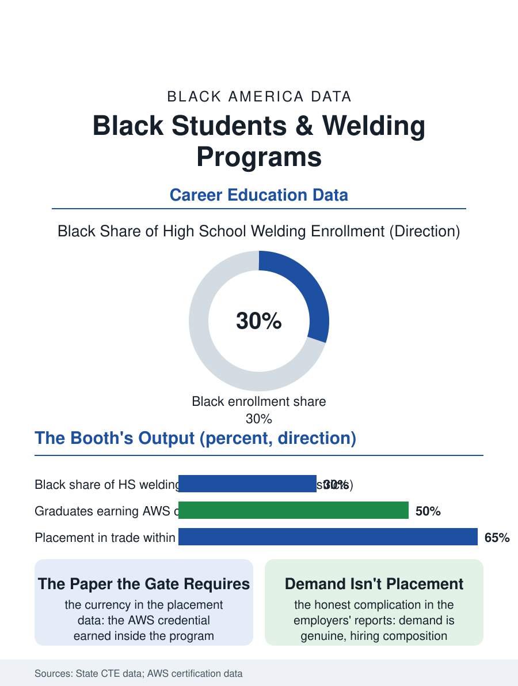

Black Education
Sparks as a Credential: Black Students and Welding
The bead bent in the press, the credential the gate requires, and the placement that needs designing. The welding file.

Welding is the CTE file's hottest ticket in the literal sense: the booth, the arc, and the certification that the shipyards and the construction files bid for, in a program whose Black enrollment in the Gulf and industrial districts runs at levels the trade's workforce data have yet to match at the hiring gate. This article reads the welding program file.
The Booth and the Bead
The program's pedagogy is the practicum entire: the student hours in the booth running the bead in the positions the certification will test, the instructor's eye reading the puddle over the student's shoulder, a craft transmission unchanged in form from the apprenticeship's in the pattern of the trade files, with the school lab's equipment, the machines' generation and the booths' count, being the program's capital file and its equity variable, the districts' labs ranging from the industry-current to the museum's in the funding data's usual distribution. The certification is the program's currency: the American Welding Society's credentials earned inside the high school program convert the diploma into the hiring file's document, and the programs that test their students on site post the placement rates the CTE file's advocates cite as the model's proof, the graduate walking from the booth to the shipyard's gate with the paper the gate requires. The safety file is the booth's first curriculum and the file insists on its weight in this program above the others: the arc's ultraviolet, the fume's metals, the cylinder's stored energy, taught as the trade's permanent conditions rather than its accidents, in the school lab whose ventilation and whose supervision ratios are the district's investment made visible in the air the students breathe. The programs that teach the safety as the craft's honor rather than its compliance produce the graduates the yards' safety records can identify, a claim the employers' partnerships repeat often enough to count as data.
The Employer's Two Reports
The placement file is the program's honest complication, because the employers' demand in the trade data is genuine and the hiring's composition lags it, the Black graduate's placement rate and starting assignment, the production line against the craft's bench, distributing in the industrial files' pattern, with the union apprenticeship's gate and the nonunion shop's foreman both reading the same certificate through the files above this one. The program's response in the strong districts is the employer's formal partnership, the advisory board with hiring commitments and the internship's summer in the actual yard, converting the placement from the graduate's search to the program's design in the pattern of the health academy's. The girls' enrollment in the booth is the file's small rising line, the trade's image changing at the school's door before it changes at the yard's, in the pattern the other trades' files record at the same lag.
Sparks as a Credential
The welding file closes on the program's place in the CTE argument, because welding is the case the model's defenders reach for first: a skill the market prices in the open, a certification the school can deliver entire, a wage at the diploma's edge that rivals the bachelor's file's median at the same age, and a student population whose engagement in the booth refutes, daily, the disengagement the general file assigns them. Its honest limit is the body's, the trade's decades written in the welder's eyes and lungs in the occupational health file, a curriculum the program owes its students in the same hours as the bead. The society counts the certifications each year, the school programs' share rising. The file's last entry is the test coupon bent in the press at the certification's end, the bead holding or breaking in the inspector's hands, the student's whole case made in metal, in the one examination in the education files whose verdict cannot be appealed and need not be explained, which is the booth's dignity and its demand in a single crack or its absence. The booth's partition walls carry the graduates' names in the programs that keep the custom, a roster in marker that the new cohort reads as the standard's local form. The names accumulate, cohort under cohort, toward the ceiling. The record stands in the program's own hand.
More in Black Education
Black Educational Attainment: High School Parity, the College Gap
About 89 percent of Black adults hold a high school diploma and one in four holds a bachelor's degree or higher — the attainment ladder, the college completion gap, and the generational trend.
Historically Black Colleges and Universities: Enrollment and Degrees
More than 100 HBCUs enroll roughly 290,000 students and award about one in six Black bachelor's degrees — an outsized share from a small sector. The federal education data.
Black College Enrollment: 2.4 Million Students
About 2.4 million Black students are enrolled in American colleges — nearly two-thirds of them women. The NCES enrollment data by sector, level, and trend.
Source: State career and technical education data; American Welding Society school certification records.